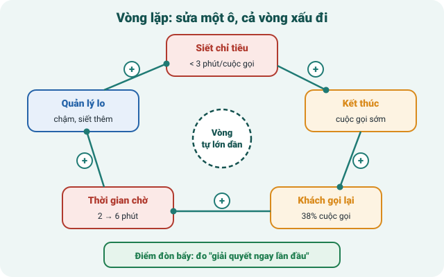

K3 · Giải quyết vấn đề và ra quyết định › Bậc 4 Thành thạo
Nhìn vấn đề trong cả hệ thống trước khi đề xuất sửa
Bài này làm Tờ 1: Sơ đồ tác động. Mẫu in. Bài nối tiếp Tìm nguyên nhân gốc (Bậc 3).
1. Mục tiêu
- Vẽ sơ đồ tác động 5–7 ô cho một vấn đề lặp lại, có ít nhất một vòng lặp.
- Nêu hai tác động dây chuyền của một đề xuất trước khi trình nó.
2. Khởi động truy xuất
Hai câu này ôn Bậc 3. Trả lời không nhìn bài cũ.
- Khi hỏi "Vì sao?", nên hỏi về người hay về quy trình? Vì sao?
- Sửa tạm khác sửa gốc ở điểm nào?
Đáp án
- Về quy trình. Hỏi về người thường dừng ở việc trách, không tìm ra chỗ sửa.
- Sửa tạm chặn hậu quả hôm nay. Sửa gốc làm sự cố không lặp lại.
Xem lại: Tìm nguyên nhân gốc.
3. Giải thích
Ở Bậc 3, bạn lần theo một chuỗi nguyên nhân thẳng. Ở Bậc 4, bạn thấy rằng nhiều nguyên nhân tác động qua lại.
Hệ thống là các bộ phận, con người, quy định và con số cùng ảnh hưởng nhau. Sửa một chỗ có thể làm chỗ khác hỏng.
Ba điều cần nhìn thấy:
- Tác động dây chuyền. Một thay đổi kéo theo thay đổi khác. Hãy hỏi "rồi sao nữa?" ít nhất hai lần.
- Vòng lặp. A làm tăng B, B lại làm tăng A. Vòng lặp làm vấn đề tự lớn dần, hoặc tự cân bằng.
- Độ trễ. Kết quả có thể đến sau vài tuần. Người ta hay bỏ giải pháp tốt vì chưa thấy hiệu quả ngay.

Cách vẽ sơ đồ tác động:
- Viết vấn đề ở giữa. Mỗi ô là một thứ có thể tăng hoặc giảm, như "số cuộc gọi lại".
- Nối các ô bằng mũi tên. Ghi "+" nếu cùng chiều, "−" nếu ngược chiều.
- Tìm một vòng khép kín. Đó thường là lý do vấn đề cứ quay lại.
Điểm đòn bẩy là chỗ thay đổi nhỏ mà tác động lớn và lâu. Nó thường nằm ở chỉ tiêu, luồng thông tin hoặc quy tắc. Ít khi nằm ở việc nhắc nhở người làm.
Tờ 1. Sơ đồ tác động
- Vấn đề lặp lạiMô tả bằng con số, có thời gian.
- 5–7 ô tác độngMỗi ô là thứ tăng hoặc giảm được.
- Mũi tên và vòng lặpGhi + hoặc −, khoanh vòng khép kín.
- Điểm đòn bẩyThay đổi nhỏ nhất làm gãy vòng.
- Rồi sao nữa?Hai tác động dây chuyền của đề xuất.
Sơ đồ là giả thuyết, không phải sự thật. Hãy đưa cho người ở các bộ phận khác xem và sửa.
4. Ví dụ tại nơi làm việc Việt Nam
Tình huống giả định. Chị Hạnh là chuyên viên chính ở tổng đài chăm sóc khách hàng của một công ty viễn thông tại Đà Nẵng. Thời gian chờ của khách tăng từ 2 lên 6 phút trong 3 tháng.
Quản lý định đặt chỉ tiêu: mỗi cuộc gọi dưới 3 phút. Chị Hạnh xin hai ngày để vẽ sơ đồ.
Chị lấy số liệu. 38% cuộc gọi là khách gọi lại lần hai cho cùng một việc. Tỷ lệ này tăng từ khi có chỉ tiêu tốc độ cũ. Chị vẽ vòng lặp ở Hình 1.
Chị hỏi "rồi sao nữa?" cho đề xuất của quản lý. Lần một: nhân viên cắt cuộc gọi sớm hơn. Lần hai: khách gọi lại nhiều hơn, thời gian chờ còn tăng.
Chị đề xuất đổi điểm đòn bẩy. Đo "tỷ lệ giải quyết ngay lần đầu" thay cho thời gian mỗi cuộc gọi. Thử 4 tuần ở một ca. Chị nói trước: tuần đầu thời gian chờ có thể chưa giảm.
Sau 4 tuần, tỷ lệ gọi lại ở ca thử giảm còn 21%.
Vì sao cách này tốt: chị dùng số liệu để chứng minh vòng lặp. Chị nêu tác động dây chuyền của cả hai đề xuất. Chị nói trước về độ trễ, nên mọi người không bỏ cuộc sớm.
5. Thực hành
Tình huống giả định. Bạn là kỹ thuật viên chính ở một xưởng cơ khí tại Bình Dương. Máy hay hỏng đột xuất. Mỗi lần hỏng, đội bảo trì phải sửa gấp. Vì bận sửa gấp, đội bỏ lịch bảo dưỡng định kỳ. Giám đốc đề nghị tăng ca cho đội bảo trì.
Vẽ sơ đồ tác động 5–7 ô. Tìm vòng lặp. Nêu hai tác động dây chuyền của đề xuất tăng ca.
Gợi ý 1
Bắt đầu từ ô "số lần máy hỏng đột xuất". Nó làm tăng ô nào? Ô đó làm giảm ô nào?
Gợi ý 2
Tăng ca giải quyết được gì trong tuần này? Sau 2 tháng, sức khỏe và lỗi của đội thì sao?
Lời giải mẫu
- Vòng lặp: hỏng đột xuất tăng, nên giờ sửa gấp tăng. Giờ sửa gấp tăng, nên giờ bảo dưỡng giảm. Bảo dưỡng giảm, máy xuống cấp, lại hỏng nhiều hơn.
- Rồi sao nữa? (tăng ca) Lần một: tuần này sửa nhanh hơn. Lần hai: đội mệt, dễ sai, và bảo dưỡng vẫn bị bỏ, nên vòng vẫn chạy.
- Điểm đòn bẩy: khóa cứng 4 giờ bảo dưỡng mỗi tuần cho máy hay hỏng nhất, kể cả khi có việc gấp. Thử 6 tuần, rồi đếm số lần hỏng.
- Nói trước độ trễ: 2–3 tuần đầu có thể chưa thấy giảm.
(Số liệu là giả định.)
6. Tự kiểm tra
Chọn đáp án. Mỗi lựa chọn đều có giải thích.
Câu 1. Cửa hàng thưởng nhân viên theo số đơn bán được. Sau 2 tháng, số đơn bị trả lại tăng mạnh. Cách nhìn nào mang tính hệ thống?
-
Chưa đúng. Cách này chỉ nhắc người, không xử lý cách thưởng đang đẩy nhân viên bán ép.
-
Đúng. Đúng. Chỉ tiêu là một ô trong hệ thống. Nó có thể tạo ra chính vấn đề.
-
Chưa đúng. Cách này giấu triệu chứng và làm khách mất lòng tin, tác động dây chuyền xấu hơn.
Câu 2. Đâu là một vòng lặp?
-
Chưa đúng. Đây là chuỗi thẳng. Xe chạy chậm không tác động ngược lại cơn mưa.
-
Đúng. Đúng. Ô cuối tác động ngược về ô đầu, nên vấn đề tự lớn dần.
-
Chưa đúng. Đây là một quy trình thẳng, không có tác động quay lại.
Câu 3. Đề xuất của bạn có hiệu quả sau khoảng 3 tuần. Bạn nên làm gì khi trình?
-
Chưa đúng. Nếu tuần đầu chưa thấy kết quả, mọi người dễ bỏ giải pháp tốt.
-
Đúng. Đúng. Nêu độ trễ giúp mọi người kiên nhẫn và biết khi nào đánh giá.
-
Chưa đúng. Hứa điều mình biết là sai làm mất lòng tin khi kết quả chưa đến.
Câu 4. Điểm đòn bẩy thường nằm ở đâu?
-
Chưa đúng. Nhắc nhở ít khi đổi được hệ thống. Vấn đề thường quay lại.
-
Đúng. Đúng. Đổi những thứ này có thể làm gãy vòng lặp với chi phí nhỏ.
-
Chưa đúng. Thêm nguồn lực có khi cần, nhưng thường tốn và không làm gãy vòng lặp.
7. Phản tư
- Vấn đề nào ở chỗ bạn "sửa mãi không hết"? Có thể nó đang nằm trong một vòng lặp không?
- Chỉ tiêu nào ở chỗ bạn đúng ở một ô, nhưng có thể sai ở cả hệ thống?
8. Áp dụng thật
Trong 7 ngày tới, chọn một vấn đề lặp lại ở chỗ làm. Làm Tờ 1. Đưa sơ đồ cho một người ở bộ phận khác xem, và ghi lại một chỗ họ sửa.
9. Siêu dữ liệu
| skill | K3 · Giải quyết vấn đề và ra quyết định |
|---|---|
| level | Bậc 4 · Thành thạo |
| group | N4 |
| framework_map | WEF: Analytical thinking; CSfW: 3b Make decisions; 3c Identify and solve problems; SkillsFuture CCS: Problem Solving; Sense Making; NACE: Critical Thinking; LifeComp: L2 Critical thinking (chỉ dẫn chiếu) |
| updated | 2026-11-14 |
Hoàn thành bài
Đánh dấu đã học để site gợi ý lịch ôn sau 1, 3 và 7 ngày. Dữ liệu chỉ lưu trên máy của bạn.
Lịch ôn gợi ý: